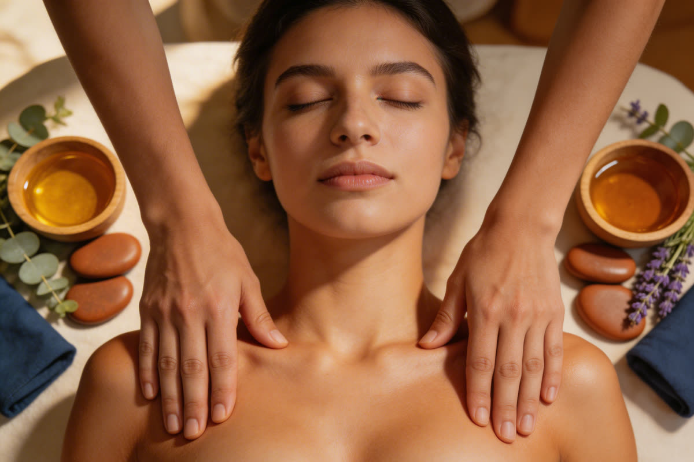
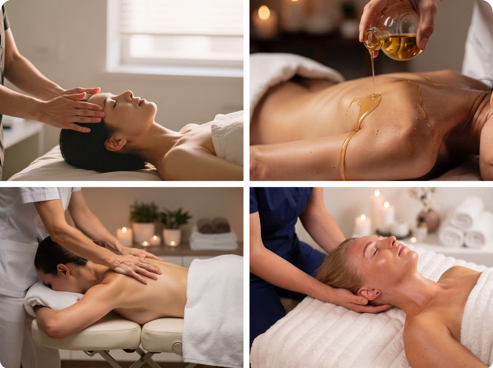

Zabiegi · 10 min czytania
Rodzaje masażu twarzy - który wybrać dla siebie

„Chciałabym masaż twarzy” to jedno z częstszych pytań, jakie do nas trafiają - i prawie zawsze kryje się za nim coś bardzo konkretnego. U jednej osoby to poranna opuchlizna, która schodzi dopiero koło południa. U innej zaciskana w nocy żuchwa i ból skroni. U jeszcze innej opadający owal i zmęczone rysy. To trzy różne problemy i trzy różne techniki. Poniżej tłumaczymy, czym różnią się poszczególne rodzaje masażu twarzy, na co realnie działają, kiedy trzeba je odłożyć - i jak wybrać ten, który odpowiada na Twój problem, a nie na hasło z internetu.
Dlaczego „masaż twarzy” to nie jeden zabieg
Twarz to zaskakująco gęsta okolica: kilkadziesiąt mięśni mimicznych i żucia, powięź, bardzo płytko biegnąca sieć naczyń chłonnych, cienka skóra i kość, do której to wszystko się przyczepia. Każda technika masażu pracuje na innej z tych warstw - i właśnie dlatego wybór ma znaczenie.
Uproszczenie, które warto zapamiętać: im większy obrzęk, tym lżejszy powinien być dotyk; im większe napięcie mięśniowe, tym wolniejsza i głębsza praca. Delikatny drenaż nie rozluźni zaciśniętej żuchwy, a mocny masaż modelujący nie zlikwiduje zastoju limfy - może go nawet nasilić. To najczęstszy błąd przy wyborze zabiegu na własną rękę.
Druga rzecz, o której mówimy każdemu gościowi: owal twarzy zaczyna się niżej niż twarz. Napięty kark, mostkowo-obojczykowo-sutkowy i podpotyliczne mięśnie ciągną rysy w dół, a zastój w węzłach chłonnych szyi zatrzymuje limfę wyżej. Dlatego dobrze poprowadzony masaż twarzy prawie zawsze obejmuje też szyję, kark i dekolt.
Rodzaje masażu twarzy - przegląd technik
Poniżej najczęściej spotykane techniki manualne, od najdelikatniejszej do najbardziej intensywnej.

1. Masaż klasyczny (relaksacyjny) twarzy
Najspokojniejszy wariant: wolne głaskania, delikatne ugniatania i rozcierania prowadzone wzdłuż linii napięcia, zwykle na olejku lub kremie, często razem z szyją i dekoltem. Pracuje głównie na skórze i tkance podskórnej.
Dla kogo: przemęczenie, stres, gorsza jakość snu, szarawa i pozbawiona blasku cera, pierwszy raz z masażem twarzy. Czego się spodziewać: wyraźne odprężenie, lepiej ukrwiona i cieplejsza skóra, uczucie „rozluźnionej” twarzy. Nie jest to zabieg modelujący i nie ma takich ambicji.
2. Drenaż limfatyczny twarzy
Bardzo lekka, powolna, rytmiczna praca prowadzona zgodnie z przebiegiem naczyń chłonnych - od środka twarzy na zewnątrz i w dół, do węzłów chłonnych szyi, które zwykle „otwiera się” jako pierwsze. Nacisk jest minimalny, bo naczynia limfatyczne biegną tuż pod skórą i zbyt mocny ucisk je zamyka zamiast udrożnić.
Dla kogo: poranne obrzęki, opuchnięte powieki i worki pod oczami, uczucie ciężkiej twarzy, zatrzymywanie wody, rekonwalescencja po zabiegach (za zgodą prowadzącego specjalisty), skłonność do zastojów przy siedzącej pracy. Czego się spodziewać: efekt widoczny najszybciej ze wszystkich technik, często zaraz po zabiegu - ale też najkrócej się utrzymujący, dlatego drenaż zwykle robi się w krótkich seriach.
3. Masaż Kobido
Japońska technika o kilkusetletniej tradycji, w Polsce najbardziej rozpoznawalny „masaż liftingujący twarzy”. Charakterystyczne są bardzo szybkie, rytmiczne ruchy obu dłoni, przeplatane spokojniejszą pracą nad mięśniami mimicznymi, powięzią, karkiem i skórą głowy. Zabieg jest w całości manualny - bez igieł, bez wypełniaczy, bez urządzeń.
Dla kogo: zmęczona twarz i opadające rysy, napięcie mimiczne (marszczone czoło, zaciskana żuchwa, napięcie wokół oczu), pierwsze zmarszczki, napięty kark ciągnący owal w dół. Czego się spodziewać: po jednym zabiegu - wypoczęte, wyraźnie bardziej „obudzone” rysy i mocno rozluźniona mimika; realna praca nad jędrnością wymaga serii. Więcej o przebiegu i wariantach czasowych opisaliśmy na stronie zabiegu masaż Kobido w Poznaniu.
4. Masaż mioplastyczny (modelujący, skulpturalny)
Głębsza i bardziej ukierunkowana praca na mięśniach mimicznych i żucia oraz na powięzi - z uchwytami, które przypominają raczej pracę fizjoterapeutyczną niż zabieg kosmetyczny. Terapeutka pracuje wolno, punkt po punkcie, często obejmując też kark i mięśnie podpotyliczne.
Dla kogo: asymetria napięcia (jedna strona twarzy wyraźnie bardziej spięta), zaciskanie zębów i bruksizm, napięciowe bóle głowy, utrwalone zmarszczki mimiczne, chęć pracy nad owalem i linią żuchwy. Czego się spodziewać: odczuwalny, momentami intensywny zabieg; efekt jest bardziej trwały niż przy drenażu, ale buduje się przez serię. Bywa, że przez kilka godzin po masażu twarz jest lekko zaczerwieniona.
5. Masaż transbukalny (wewnątrzustny)
Wariant, w którym część pracy prowadzona jest w rękawiczce od wewnątrz jamy ustnej - to jedyny sposób, by dosięgnąć mięśni żucia, zwłaszcza mięśnia skrzydłowego i głębszych partii żwacza. Zwykle łączy się go z pracą zewnętrzną nad twarzą i karkiem.
Dla kogo: silnie zaciskana żuchwa, bruksizm, napięcie i przeskakiwanie w stawie skroniowo-żuchwowym, wyraźnie przerośnięte, „kwadratowe” żwacze, uporczywe napięcie w skroniach. Czego się spodziewać: najbardziej odczuwalna z opisanych technik i jednocześnie najskuteczniejsza przy problemach ze stawem skroniowo-żuchwowym. Wymaga terapeuty z konkretnym przeszkoleniem; przy leczeniu stomatologicznym lub ortodontycznym warto najpierw zapytać prowadzącego lekarza.
6. Masaż narzędziami: gua sha, rollery, bańka chińska
Gua sha to płaska płytka (kamienna lub ze stali), którą prowadzi się po skórze wzdłuż ustalonych linii; roller to wałek chłodzący i lekko drenujący; bańka chińska pracuje podciśnieniem, unosząc skórę i tkankę podskórną. Wszystkie trzy działają przede wszystkim na mikrokrążenie, ślizg tkanki i odpływ limfy.
Dla kogo: obrzęki, uczucie „stojącej” twarzy, wsparcie efektów masażu manualnego w domu. Czego się spodziewać: ładny, ale krótkotrwały efekt „świeżości”. To dobre uzupełnienie, nie zamiennik pracy rąk - i technika, w której najłatwiej sobie zaszkodzić zbyt mocnym naciskiem. Bańka w niewprawnych rękach potrafi zostawić wybroczyny na twarzy, dlatego przy naczynkach lepiej ją odpuścić.
7. Akupresura i shiatsu twarzy
Praca punktowa: utrzymywany, dozowany ucisk w konkretnych miejscach - u nasady brwi, przy skrzydełkach nosa, wzdłuż linii żuchwy, u podstawy czaszki. Bez olejku, bez przesuwania skóry.
Dla kogo: napięciowe bóle głowy, uczucie ucisku wokół zatok (poza fazą zapalną), stres i trudność z wyciszeniem, napięcie wokół oczu po dniu przed ekranem. Czego się spodziewać: wyraźne rozluźnienie i wyciszenie; to technika bardziej „regulująca” niż estetyczna.
Który masaż twarzy wybrać - porównanie
| Rodzaj masażu | Główny cel | Intensywność | Kiedy go wybrać |
|---|---|---|---|
| Klasyczny (relaksacyjny) | Odprężenie, ukrwienie skóry | Bardzo lekka | Stres, przemęczenie, pierwszy masaż twarzy |
| Drenaż limfatyczny | Odpływ limfy, redukcja obrzęku | Bardzo lekka | Poranna opuchlizna, worki pod oczami |
| Kobido | Jędrność, mimika, wypoczęte rysy | Średnia | Zmęczona twarz, pierwsze zmarszczki, napięty kark |
| Mioplastyczny (modelujący) | Napięcie mięśni, owal twarzy | Wysoka | Bruksizm, asymetria napięcia, praca nad żuchwą |
| Transbukalny | Mięśnie żucia od wewnątrz | Wysoka | Staw skroniowo-żuchwowy, przerośnięte żwacze |
| Gua sha, roller, bańka | Mikrokrążenie, ślizg tkanki | Lekka | Uzupełnienie zabiegów, pielęgnacja domowa |
| Akupresura / shiatsu | Rozluźnienie punktowe, wyciszenie | Średnia, punktowa | Bóle głowy, napięcie wokół oczu i zatok |
Jeśli masz wybrać jedną rzecz do zapamiętania: obrzęk lubi delikatność, napięcie lubi czas. Zabiegu nie dobiera się do nazwy, którą się gdzieś usłyszało, tylko do tego, co dzieje się z twarzą - i to jest zadanie terapeutki, nie Twoje.
Czego masaż twarzy nie zrobi
Wokół zabiegów na twarz krąży sporo obietnic na wyrost, więc powiedzmy to uczciwie:
- Nie zastąpi medycyny estetycznej. Masaż pracuje na napięciu, ukrwieniu i obrzęku. Nie odbuduje utraconej objętości ani nie usunie zmarszczek strukturalnych, czyli tych widocznych także wtedy, gdy twarz jest całkowicie rozluźniona.
- Nie „usuwa tkanki tłuszczowej z twarzy”. Zmiana konturu po serii zabiegów wynika przede wszystkim ze spadku obrzęku i zmiany napięcia mięśni, nie z redukcji tłuszczu.
- Nie leczy trądziku. Przy aktywnych zmianach zapalnych masaż w tej okolicy jest wręcz przeciwwskazany, bo roznosi stan zapalny.
- Nie daje efektu na stałe po jednej wizycie. Pojedynczy zabieg daje efekt „na wieczór”: mniej obrzęku, świeższe rysy, rozluźniona mimika. Trwalsza zmiana to kwestia serii i tego, co dzieje się między wizytami - snu, nawodnienia, pozycji przy biurku i tego, czy zaciskasz zęby.
Przeciwwskazania do masażu twarzy
Skóra twarzy jest cienka, a okolica bogato unaczyniona i unerwiona - lista sytuacji, w których zabieg trzeba odłożyć, jest tu dłuższa niż przy masażu ciała.
Kiedy zabiegu nie wykonujemy
- Gorączka, infekcja, ostry stan zapalny.
- Aktywny stan zapalny skóry twarzy: ropne zmiany trądzikowe, zapalenie mieszków włosowych, zakażenia bakteryjne i grzybicze.
- Opryszczka w fazie aktywnej - masaż roznosi wirusa na sąsiednie okolice.
- Świeże rany, otarcia, oparzenia słoneczne i podrażnienie po silnym peelingu.
- Zapalenie zatok, zapalenie nerwu twarzowego lub trójdzielnego w fazie ostrej.
- Świeży uraz twarzy, złamanie kości twarzoczaszki, stan bezpośrednio po operacji.
- Zakrzepica, zaburzenia krzepnięcia, leczenie przeciwzakrzepowe.
- Powiększone, bolesne węzły chłonne szyi o nieustalonej przyczynie.
Kiedy najpierw zapytaj specjalistę
- Choroba nowotworowa i okres leczenia onkologicznego.
- Niedawne zabiegi medycyny estetycznej: toksyna botulinowa, wypełniacze, nici, mezoterapia, laser, głębsze peelingi. Każdy z nich ma własny, określony przez lekarza czas karencji.
- Świeży makijaż permanentny brwi, ust lub kreski.
- Trądzik różowaty i skóra silnie naczyniowa - zwykle możliwa jest tylko bardzo delikatna praca limfatyczna.
- Choroby tarczycy, zwłaszcza z powiększeniem gruczołu.
- Padaczka, jaskra, stan po zabiegach okulistycznych.
- Ciąża - technika i pozycja wymagają dostosowania.
- Leczenie ortodontyczne i stomatologiczne, jeśli planujesz masaż transbukalny.
Przed każdym zabiegiem pytamy o stan zdrowia, przyjmowane leki i zabiegi estetyczne z ostatnich tygodni. To nie formalność - od tych odpowiedzi zależy dobór techniki albo decyzja o przełożeniu wizyty.
Masaż twarzy a makijaż permanentny i zabiegi estetyczne
To pytanie wraca u nas regularnie, bo bardzo wiele osób łączy masaż twarzy z pielęgnacją brwi i ust. Zasada jest prosta: najpierw goi się skóra, potem wraca masaż.
Świeża pigmentacja to mikrouszkodzenie naskórka. Masaż w tej okolicy zbyt wcześnie zaburza gojenie, może przesunąć strupki i wpłynąć na to, jak pigment się osadzi - a efekt makijażu permanentnego ocenia się dopiero po pełnym wygojeniu i wizycie korygującej. W praktyce zabieg na twarz odkłada się do czasu, który wskaże osoba wykonująca pigmentację; przy masażu obejmującym całą twarz zwykle oznacza to kilka tygodni.
Odwrotna kolejność bywa wygodniejsza: najpierw seria masaży, potem pigmentacja. Jeśli szukasz w Poznaniu miejsca, które robi makijaż permanentny spokojnie i bez efektu „narysowanych” brwi, nasi goście dobrze wypowiadają się o studiu Permanent Guru - konsultacja jest tam bezpłatna, więc łatwo dopytać o karencję jeszcze przed umówieniem masażu.
Ta sama logika dotyczy medycyny estetycznej. Po toksynie botulinowej, wypełniaczach, nićmi czy mezoterapii obowiązuje karencja wyznaczona przez lekarza, który wykonywał zabieg - i to jego zalecenie jest tu nadrzędne wobec wszystkiego, co przeczytasz w internecie.
Jak często robić masaż twarzy
Częstotliwość zależy od tego, czy pracujemy nad konkretnym celem, czy podtrzymujemy efekt.
- Praca nad owalem, jędrnością lub napięciem mimicznym: seria 6–10 zabiegów co 7–14 dni.
- Podtrzymanie efektu po serii: jedna wizyta na 3–4 tygodnie.
- Drenaż limfatyczny: krótkie serie, nawet raz w tygodniu, zwłaszcza w okresach nasilonych obrzęków.
- Masaż relaksacyjny twarzy: bezpiecznie mniej więcej raz w miesiącu, jako element regularnej pielęgnacji.
- Masaż transbukalny: zwykle rzadziej i zawsze w serii ustalonej indywidualnie - to mocny bodziec dla mięśni żucia.
Codzienne, intensywne masowanie twarzy w domu nie przyspiesza efektów. Tkanka potrzebuje przerwy między bodźcami, a przy skórze naczyniowej nadgorliwość zwykle kończy się podrażnieniem.
Jak przygotować się do wizyty i co robić potem
- Nie musisz przychodzić bez makijażu - zabieg zaczynamy od demakijażu i oczyszczenia skóry.
- Powiedz o wszystkich zabiegach estetycznych z ostatnich tygodni, także tych „drobnych”.
- Zdejmij soczewki kontaktowe, jeśli planujemy pracę wokół oczu.
- Po masażu pij wodę i przez kilka godzin odpuść mocny makijaż - skóra jest wtedy lepiej ukrwiona i bardziej reaktywna.
- Tego dnia lepiej pominąć saunę, basen i intensywny trening.
- Przez dobę po zabiegu warto zrezygnować z peelingów i kwasów.
Jeśli zastanawiasz się, czy Twoje ciało w ogóle sygnalizuje potrzebę zabiegu, pomocna będzie nasza lista 5 sygnałów, że Twoje ciało potrzebuje masażu. A o tym, na jakich preparatach pracujemy, piszemy w tekście o naturalnych olejkach do masażu.
Masaż twarzy w Poznaniu
Nasze studio działa na poznańskich Jeżycach, przy ul. Zeylanda 3/1. Z masaży twarzy wykonujemy obecnie masaż Kobido, dostępny także w wariancie Kobido dla dwojga oraz w połączeniu z masażem ciała w zabiegu ciała i twarzy dla dwojga. Kolejne techniki - transbukalną, mioplastyczną i autorski masaż skulpturalny twarzy - wprowadzamy do oferty wkrótce; ich status na bieżąco widać na liście wszystkich zabiegów, a czasy trwania i ceny znajdziesz w cenniku, bez „od” i bez gwiazdek.
Każdą wizytę zaczynamy od rozmowy. Zdarza się, że proponujemy inny zabieg niż ten, z którym gość do nas przychodzi - na przykład pracę nad karkiem, zanim w ogóle dotkniemy twarzy. To normalne i zwykle daje lepszy efekt niż trzymanie się nazwy zabiegu.
Najczęstsze pytania
Jakie są rodzaje masażu twarzy?
Najczęściej spotykane techniki manualne to masaż klasyczny (relaksacyjny) twarzy, drenaż limfatyczny, japoński masaż Kobido, masaż mioplastyczny zwany też modelującym lub skulpturalnym, masaż transbukalny wykonywany częściowo od wewnątrz jamy ustnej, masaż narzędziami typu gua sha i rollery oraz masaż bańką chińską. Osobną grupą jest akupresura i shiatsu twarzy, czyli praca punktowa. Każda z tych technik działa na inną warstwę i odpowiada na inny problem.
Który masaż twarzy jest najlepszy na opuchniętą twarz?
Przy porannych obrzękach i workach pod oczami najlepiej sprawdza się drenaż limfatyczny twarzy. To bardzo delikatna, powolna praca prowadzona zgodnie z przebiegiem naczyń chłonnych, w kierunku węzłów chłonnych szyi. Nacisk jest minimalny, bo naczynia limfatyczne biegną tuż pod skórą - mocny masaż nie przyspieszy tu efektu, tylko go zaburzy.
Czy masaż twarzy wygładza zmarszczki?
Masaż twarzy realnie zmniejsza napięcie mięśni mimicznych, poprawia ukrwienie i nawilżenie skóry oraz redukuje obrzęk, przez co zmarszczki mimiczne - zwłaszcza lwia zmarszczka i napięcie wokół oczu - stają się mniej widoczne. Nie usuwa jednak zmarszczek strukturalnych ani nie zastępuje zabiegów medycyny estetycznej. Efekt jest realny, ale stopniowy i wymaga powtarzalności.
Jak często robić masaż twarzy?
Przy pracy nad konkretnym celem, na przykład nad owalem twarzy lub napięciem żuchwy, zwykle proponuje się serię 6–10 zabiegów co 7–14 dni, a potem wizyty podtrzymujące raz na 3–4 tygodnie. Drenaż limfatyczny można wykonywać częściej, nawet raz w tygodniu w krótkich seriach. Masaż relaksacyjny twarzy jest bezpieczny w rytmie mniej więcej raz w miesiącu.
Czy można robić masaż twarzy po makijażu permanentnym?
Nie od razu. Świeża pigmentacja brwi, ust lub kreski to mikrouszkodzenie naskórka, które potrzebuje czasu na wygojenie, a masaż w tej okolicy może zaburzyć gojenie i osadzanie pigmentu. W praktyce zabieg na twarz odkłada się do pełnego zagojenia i zwykle do czasu po wizycie korygującej. Zawsze warto zapytać o konkretny termin osobę, która wykonywała makijaż permanentny.
Czym Kobido różni się od klasycznego masażu twarzy?
Masaż klasyczny twarzy jest wolny, kojący i pracuje przede wszystkim na skórze i tkance podskórnej, a jego celem jest odprężenie. Kobido to japońska technika o kilkusetletniej tradycji, w której bardzo szybkie, rytmiczne ruchy obu dłoni przeplatają się z wolniejszą pracą nad mięśniami mimicznymi, powięzią, karkiem i skórą głowy. Kobido jest bardziej intensywne i wyraźniej nastawione na napięcie mimiczne oraz jędrność.
Jakie są przeciwwskazania do masażu twarzy?
Zabiegu nie wykonujemy przy gorączce i infekcji, aktywnym stanie zapalnym skóry, ropnych zmianach trądzikowych, opryszczce w fazie aktywnej, świeżych ranach i oparzeniach słonecznych, zapaleniu zatok i nerwu twarzowego, świeżym urazie twarzy oraz przy zakrzepicy. Konsultacji wymagają choroba nowotworowa, niedawne zabiegi medycyny estetycznej, w tym toksyna botulinowa i wypełniacze, świeży makijaż permanentny, peelingi i laseroterapia, ciężki trądzik różowaty oraz choroby tarczycy i węzłów chłonnych szyi.
Ten tekst ma charakter informacyjny i nie zastępuje porady lekarza, dermatologa ani fizjoterapeuty. Jeśli masz chorobę skóry, przechodzisz leczenie lub niedawno miałaś zabieg estetyczny, skonsultuj wizytę ze specjalistą - a przed masażem powiedz o tym terapeutce, dobierzemy bezpieczny wariant.